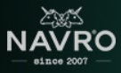
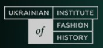
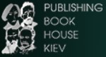
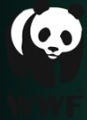

ЛОГЛАЙН
Мавка — Душа Лісу і його Берегиня — закохується у людину, талановитого музику Лукаша, й опиняється перед складним вибором: кохання чи її обов'язок перед Лісом.
ОСОБЛИВОСТІ ПРОЄКТУ
Проєкт створений за мотивами драми-феєрії Лесі Українки «Лісова пісня» та на образах зі слов’янської міфології. Анімаційний фільм буде зрозумілим найширшій аудиторії по всьому світові, але водночас він містить чарівність української автентики, що принесе глядачам дещо нове і досі нерозкрите у світовій анімації. Сюжет «Мавки» зацікавить дорослих своєю оригінальністю, а дітей – пригодами і гумором.
МІСІЇ ПРОЄКТУ
Привернути увагу до екологічних проблем — зникнення все більшого числа представників української флори і фауни, занесених до Червоної книги України, а також вирубки українських пралісів. Саме тому до магічного світу Лісу Мавки імплементовані рослини і тварини із Червоної Книги України (чорний лелека, зубр, рись та інші). Разом із Всесвітнім фондом природи WWF в Україні оголошена довготривала благодійна акція «Врятуємо рись!».
Експортувати українську культуру в усіх її проявах — традиції, ритуали, візуальне мистецтво, музика, та інші напрямки. Зокрема, костюми персонажів будуть розроблені українським дизайнером одягу Ольгою Навроцькою. Її дизайн поєднує елементи національної візуальної символіки, природні мотиви й елементи міфології — все, що знаходить відгук у тематиці фільму.
Екстер'єри фільму будуть засновані на реальних українських географічних локаціях, культурних і туристичних атракціях — таких, як ліси Карпат, село Вилкове, Буцький каньйон. Оригінальний саундтрек фільму буде створений відомими українськими музикантами, і представлять собою мікс фольклорних українських мелодій в сучасних аранжуваннях та спеціально написаних композицій. Український етно-хаус гурт ДахаБраха та мультиінструменталіст Максим Бережнюк стали першими музикантами, що розпочали роботу над саундтреком.
МАВКА. ЛІСОВА ПІСНЯ. ІНФОРМАЦІЯ
Жанр: фентезі, історія кохання, комедія
Хронометраж: 90 хв.
Аудиторія: сімейна
Формат: 3D Stereo
Стиль: 3D анімація
Звук: Dolby Digital
Мова: англійська, українська
Виробництво: Animagrad і FILM.UA
Продюсери: Ірина Костюк, Анна Єлісєєва, Єгор Олесов
Режисер: Олег Маламуж, Олександра Рубан
Сценарист: Ярослав Войцешек
Арт-директор: Крістіан Коскінін
Правовласник: Animagrad (FILM.UA Group)
Статус: готовий
Рік готовності: 2022
Прем'єра в Україні: 2 березня 2023
За підтримки Державного агентства України з питань кіно (ДержКіно), Агентства США з міжнародного розвитку (USAID).
ПАРТНЕРИ

Фахівці кафедри фольклористики Київського національного університету імені Тараса Шевченка (Олена Івановська, Олеся Наумовська, Олексій Доля) і Національного центру народної культури «Музей Івана Гончара» (Мирослава Вертюк, Петро Гончар) надають наукову підтримку в інтерпретації українських міфів, легенд, переказів та обрядів у Всесвіті Мавки.
Засновниця бренду NAVRO Ольга Навроцька виступила в ролі художника по костюмах. Вона створила оригінальний самобутній образ головної героїні анімаційного фільму, в якому переосмислила національний костюм. Образ Мавки від NAVRO отримав продовження в капсульній колекції MAVKA, до якої увійшли сукні, блузи та шарфи.
Український Інститут Історії Моди (Марія Квітка) консультував творчу групу з питань, пов'язаних із традиційним костюмом. Інститут допомагав отримати доступ до автентичних речей з приватних колекцій, елементи і деталі яких доповнюють оригінальні образи персонажів мультфільму.
За підтримки видавництва «Київський Будинок Книги» вийшла книжкова серія, присвячена проєкту. У серію включили перевидання класичної драми-феєрії Лесі Українки «Лісова пісня» українською та англійською мовами в кінообкладинці, адаптоване видання поеми для дітей з ілюстраціями з анімаційного проекту і скетчбук з героями фільму.
Фахівці Всесвітнього фонду дикої природи в Україні (WWF) надають експертну підтримку в питаннях флори і фауни Поліського краю. Представництво WWF також виступило співорганізатором всеукраїнської довгострокової благодійної акції «Врятуємо рись!». Мета акції полягає в тому, щоб привернути увагу до проблеми зникаючих видів флори і фауни України і підтримати дослідження популяції євразійської рисі на Поліссі – рідкісного виду, що занесений до Червоної книги.
Maecenas lacinia felis nec placerat sollicitudin. Quisque placerat dolor at scelerisque imperdiet. Phasellus tristique felis dolor.
Maecenas elementum in risus sed condimentum. Duis convallis ante ac tempus maximus. Fusce malesuada sed velit ut dictum. Morbi faucibus vitae orci at euismod. Integer auctor augue in erat vehicula, quis fermentum ex finibus.
Mauris pretium elit a dui pulvinar, in ornare sapien euismod. Nullam interdum nisl ante, id feugiat quam euismod commodo. Sed ultrices lectus ut iaculis rhoncus. Aenean non dignissim justo, at fermentum turpis. Sed molestie, ligula ut molestie ultrices, tellus ligula viverra neque, malesuada consectetur diam sapien volutpat risus. Quisque eget tortor lobortis, facilisis metus eu, elementum est. Nunc sit amet erat quis ex convallis suscipit. ur ridiculus mus.